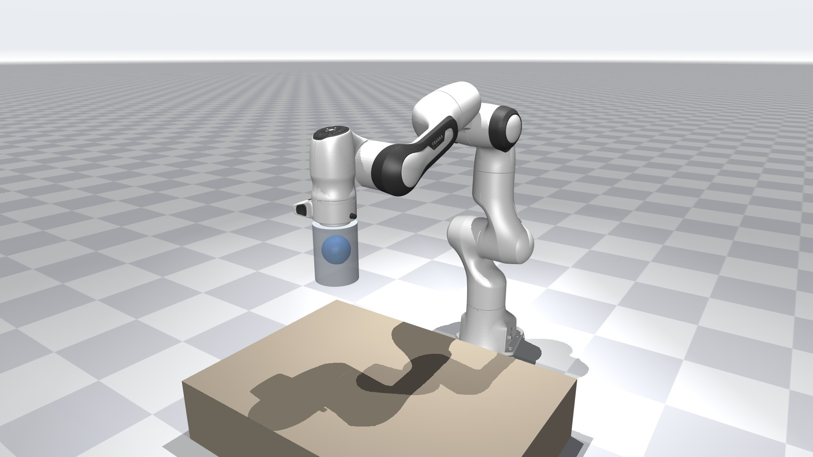
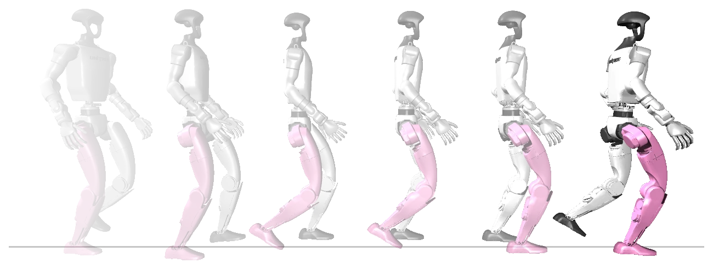
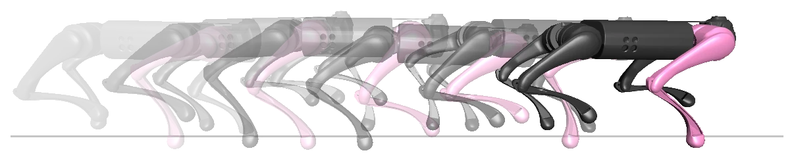
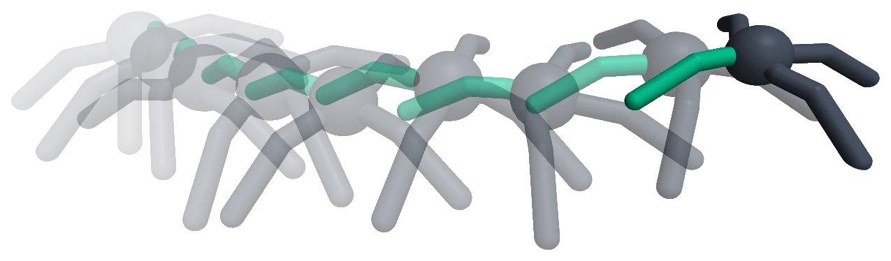
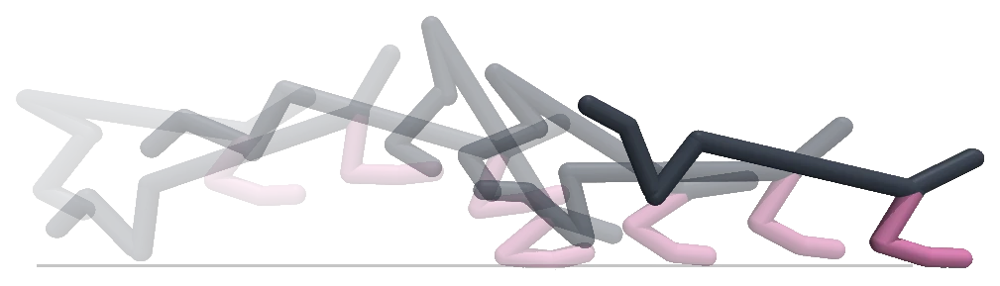

Self-Confirming Selection: Why Modular Robot Memories Fail to Recall

A robot with one skill per situation often picks the skill whose model best predicts what it senses. After the situation changes, the skill still in control produces the very data every skill is judged on, so the right skill can look wrong indefinitely. This project explains the failure, predicts when it happens, and fixes it.
The failure
Take a quadruped that has learned two ways to walk: normally, and with a weak front leg. A common way to choose between such skills is to give each one a forward model, which predicts what the robot will sense next, and to hand control to the skill whose model predicts best.
Now the leg weakens. The limping skill takes over, as it should. Then the leg recovers. The limping skill is still in control, so everything the robot senses comes from limping. The normal-walking model only ever saw normal walking, so on this data its predictions look poor, and the gate keeps the limping skill. The robot goes on limping on a healthy leg.
The choice confirms itself: the skill in control produces the evidence on which every skill is judged. We call this self-confirming selection. People show something similar after an injury, called learned non-use: a patient keeps avoiding a limb after it has healed.
What it looks like
It is not only about legs. A Franka Panda carries containers that look alike but hold different contents, and it has one carrying skill for each. When the contents change from a heavy solid to a liquid with no cue, standard selection settles on the skill for a solid of the same weight, and the liquid spills.
Standard selection
With our fix
Told what it holds
The robots
Besides the Panda, the project uses four walking robots, all in simulation. Partway through each run a leg weakens or stops working, with no warning, and the robot has to switch to the skill for that body.




Ghost images: each robot drawn at even intervals over one to four seconds, earlier poses fainter. The tinted leg is the impaired one.
What the paper shows
- When it happens. The failure has a simple condition that can be measured before deployment. With the predictions fixed before the test runs, the switches it flagged were far more often never recalled than the rest, on every robot.
- It is general. Any selector whose chosen expert produces its own next input can fail this way, including learned routers that choose between experts, not only robot skills.
- A fix at training time. Training the forward models on the right data removes the failure on most robots tested and reduces it on the rest.
- Two kinds of failure. Sometimes the right skill's model is simply wrong about what the current behaviour does, and better training fixes it. Sometimes the current behaviour reveals nothing about the change, and no model, however good, can tell. Then the robot has to try something more revealing. The paper separates the two and shows which fix each one needs.
Robots: a Franka arm and a Franka Panda carrying containers, HalfCheetah, Ant, and the Unitree Go1 and G1. All results so far are in simulation.